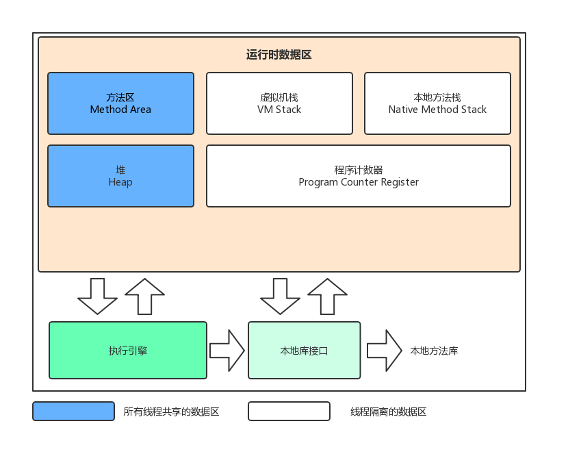

Java内存区域

程序计数器 Program Counter Register
程序计数器可以看做是当前线程所执行的字节码的行号指示器，它是线程私有的。此内存区域是唯一一个在Java虚拟机规范中没有规定任何OutOfMemoryError情况的区域。
Java虚拟机栈 Java Virtual Machine Stacks
虚拟机栈描述的是Java方法执行的内存模型：每个方法在执行的同时都会创建一个栈帧（Stack Frame）用于存储局部变量、操作树栈、动态链接、方法出口等信息，它是私有的。
如果线程请求的栈深度大于虚拟机机所允许的深度将抛出StackOverflowError异常；如果虚拟机栈可以动态扩展，如果扩展时无法申请到足够的内存，就会抛出OutOfMemoryError异常。
本地方法栈 Native Method Stack
本地方法栈是虚拟机使用到的Native方法服务。与虚拟机一样，本地方法栈区域也会抛出StackOverflowError和OutOfMemoryError异常。
Java堆 Java Heap
Java堆是被所有线程共享的一块内存区域，在虚拟机启动时创建。此内存区域的唯一目的是存放对象实例。Java堆是垃圾收集器的主要区域，所有也被称为“GC堆”（Garbage Collected Heap）。如果在堆中没有内存完成实例分配，并且堆也无法再扩展时，将会抛出OutOfMemoryError异常。
方法区 Method Area
方法区用于存储已被虚拟机加载的类信息、常量、静态变量、即时编译器编译后的代码等数据。当方法区无法满足内存分配需求时，将抛出OutOfMemoryError异常。
HotSpot虚拟机把GC分代收集扩展至方法区，或者说使用永久代来实现方法区，这样HotSpot的垃圾收集器可以像管理Java堆一样管理这部分内存，能够省去专门为方法区编写内存管理代码的工作。在JDK1.7及其之后，已经把原本放在永久代的字符串常量池移出。
运行时常量池 Runtime Constant Pool
运行时常量池是方法区的一部分，用于存放编译器生成的各种字面量和符号引用。运行时常量池具有动态性，并非预置入Class文件中常量池的内容才能进入方法区运行常量池，运行期间也可能将新的常量放入池中，这种特性常被开发人员利用得比较多的便是java.lang.String#intern。它也受到方法区内存的限制，当常量池无法再申请到内存时会抛出OutOfMemoryError异常。
直接内存 Direct Memory
直接内存并不是虚拟机运行时的数据区的一部分，也不是Java虚拟机规范中定义的内存区域。它可以使用Native函数库直接分配堆外内存，然后通过一个存储在Java堆中的DirectByteBuffer对象作为这块内存的应用进行操作。当各个内存区域总和大于物理内存限制，也会导致动态扩展时出现OutOfMemoryError异常。